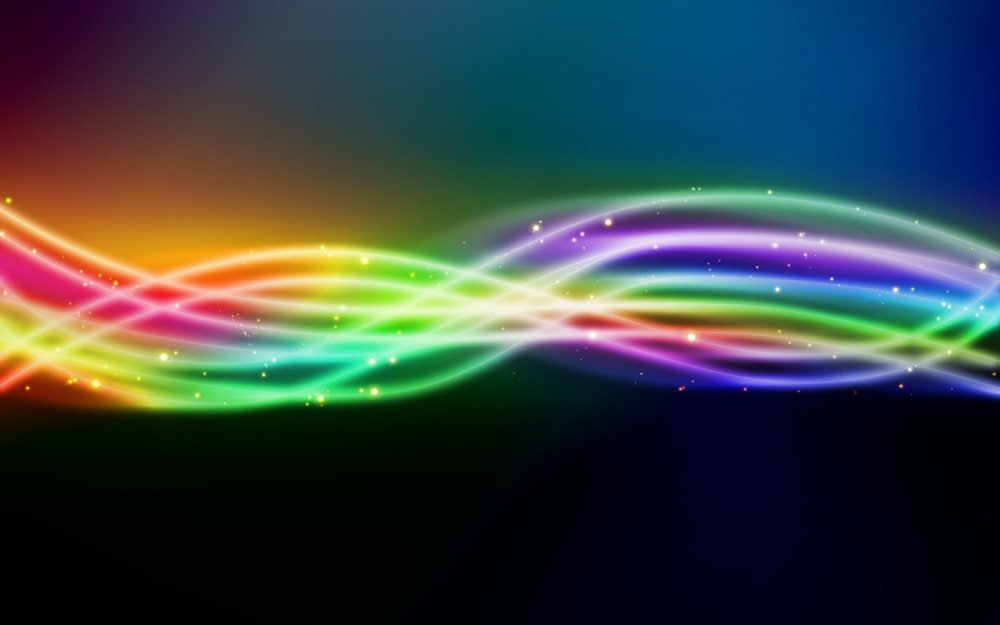

|
Синестезия - не один конкретный вид, а множество! |
Хроместезия: в этой распространенной форме синестезии звуки и цвета связаны друг с другом. Например, музыкальная нота «ре» может соответствовать зеленому цвету.
Графемно-цветовая синестезия: это распространенная форма синестезии, характеризующаяся тем, что графемы (буквы или цифры) затенены цветом. Синестеты не связывают одни и те же цвета графем друг с другом, хотя буква «А» действительно кажется многим людям красной. Люди, которые испытывают синестезию цвета графемы, иногда сообщают, что видят невозможные цвета, когда красная и зеленая или синяя и желтая графемы появляются рядом друг с другом в слове или числе.
Числовая форма: это мысленная форма или карта чисел, возникающая в результате видения или размышления о числах.
Лексико-вкусовая синестезия: это редкий тип синестезии, при котором слушание слова приводит к ощущению вкуса. Например, имя человека может иметь вкус шоколада.
Синестезия зеркального прикосновения: хотя синестезия зеркального прикосновения встречается редко, она заслуживает внимания, поскольку может разрушить жизнь синестета. При этой форме синестезии человек в ответ на раздражитель испытывает то же ощущение, что и другой человек. Например, видя, как человека похлопывают по плечу, синестет тоже почувствует похлопывание по плечу.
